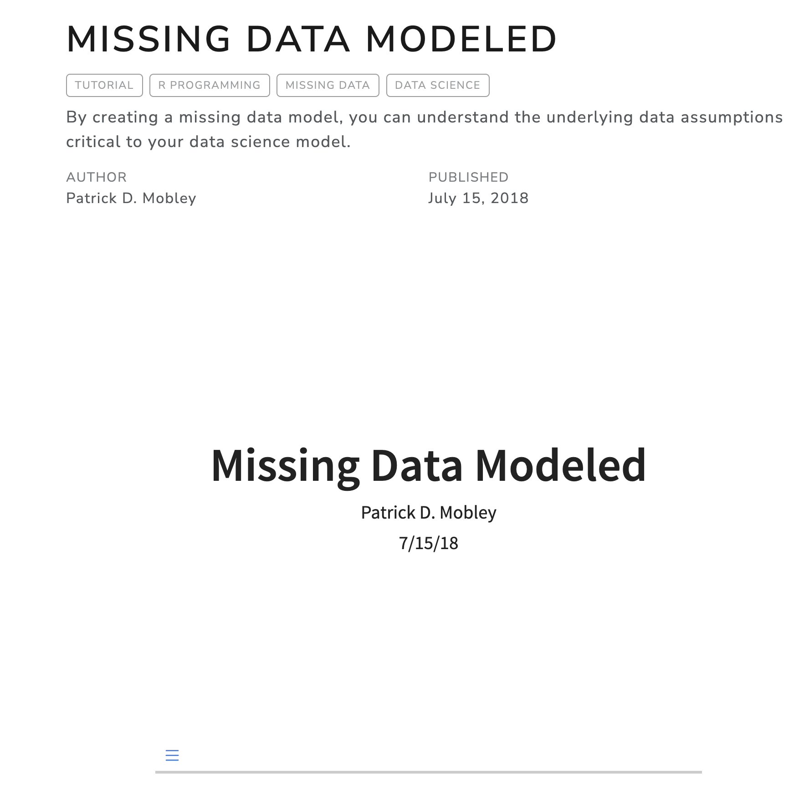
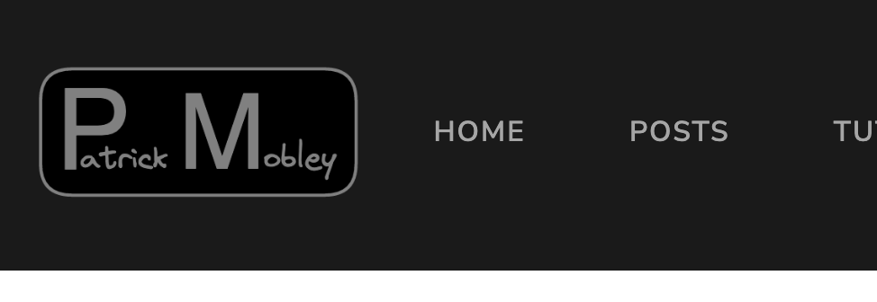
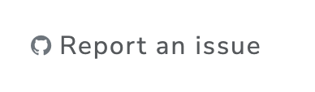

Making a Quarto Website Fancy

Whether you’re new to Quarto or recently migrated from Fastpages to Quarto, you might be wondering how to customize your new blog. While Quarto provides more flexibility and control over formatting and content, it can take some time to get familiar with the system and make it your own.
In this blog post, I will share some tips and tricks that I’ve discovered to help you customize your Quarto blog and improve its functionality and engagement.
Choosing a template
You can change the site template and choose from many options. Plus, it’s very easy. You can even create your own, however this will require some html and css knowledge.
Within the _quarto.yml, you just specify a different theme:
format:
html:
theme: lux
# Here are some bootstrap theme options:
# default, cerulean, cosmo, cyborg, darkly, flatly, journal,
# litera, lumen, lux, materia, minty, morph, pulse, quartz,
# sandstone, simplex, sketchy, slate, solar, spacelab, superhero,
# united, vapor, yeti, zephyr
css: styles.cssCheck out the Quarto documentation for more information.
Changing the listings layout
The content (post, article, tutorial, project, review, etc.) can be organized within different listings on any page. There are three different listing types: default, table, and grid. To add listings to a page, you’ll need to edit the yml and create a listing block where you want the list to render.
Here is an example of the a yml for my posts listing:
listing:
- id: posts
contents: "*/index.qmd"
sort: "date desc"
type: default
categories: true
sort-ui: false
filter-ui: false
fields: [image, date, title, reading-time, description]To render the list, you’ll need to include a reference with the id in the document:
::: {#posts}
:::To get the “reading-time”, I had to add reading-time: true to the _metadata.yml file within the current directory. Once there, if specified in the listings field property, it will show up on the site.
Embedding presentations
Let’s say you’ve given some great talks and want share them on your website. I’ve seen many people use downloadable links or they write companion tutorials (like I did in Missing Data Modeled) to share content. But a link just doesn’t do justice to the presentation and rewriting content takes a lot of work. Thankfully, there’s a better way. You can use .qmd to create an html Revealjs presentation and embed this within a post. Using the Revealjs format, you can even include all of your talking points in the notes.
- Create a blank post
- Add content into the same directory as the blank post
- If you’ve already created your presentation and have a stand-alone file, include this file in the directory
- If not, create a presentation using Revealjs within a
.qmdfile
I’ve only tested html presentations, so I’m not sure if other formats like .pptx will display.
- Add resource to
ymlheader. This ensures when building the site to include the presentation file.
title: "My presentation post page"
resources:
- "NAME-OF-SLIDESHOW.html"- Add the following html to your blank post:
<p align="center">
<iframe width="400" height="400" marginheight="0" marginwidth="0"
src="./NAME-OF-SLIDESHOW.html">
Fallback text here for unsupporting browsers, of which there are scant few.
</iframe></p>Now, you’ve got a working presentation within your site. Users can make it go full screen, download, or export as a PDF using the menu bar. It should look something like this:

If you’re looking for a presentation to inspire, check out the Quarto Reporting presentation. The author, Tom Mock utilizes a variety of features to deliver a truly great presentation.
Embedding videos
Adding videos to your site is really easy as explained here. Basically, you use the {{< video >}} shortcode on your page. For example:
{{< video https://www.youtube.com/embed/wo9vZccmqwc >}}Favicon
If you just want a simple favicon with your initials check out favicon.io. You can also upload images with your logo, and it will resize them appropriate for favicon use. To use, just create a reference (ex: favicon: favicon-32x32.png) to it within your _quarto.yml file under the website property. You can see more here.
Logo branding
If you want, you can also use a logo instead of text on your website header. I used Excalidraw to create my website icon and included it by changing the navbar property within the _quarto.yml file:
navbar:
logo: name.png
logo-alt: "somename"
title: false

Initially, the navbar logo was super tiny. So I had to adjust some css within the styles.css file:
.navbar-logo {
height: 4em !important;
max-width: unset !important;
max-height: unset !important;
}The Quarto website itself does this through a similar mechanism.
Github links
Many websites have sidebar content to “Report an issue” or “Edit this page”.
I followed the directions here and added the following code to the _quarto.yml file:

repo-url: https://github.com/patdmob/patdmob.github.io
repo-actions: [issue] The Github link only appears on pages that have a sidebar with a table of contents.
Subscription feature
At the time of writing this, I haven’t added a subscription feature. But many people have done it in a few different ways. Here are some resources if you want to include a subscription feature on your blog:
- Excellent post on adding subscriptions to a Quarto site
- Albert Rapp’s Quarto guide also touches on this here
- Quarto’s documentation also has a section to set up subscriptions.
Includes
This is a really neat feature likely hailing from the C programming language. Basically, you can include references to other files throughout your document. The text/code in these other files will run as if it were in the main file.
I’ve used this feature a lot when making Rmarkdown reports in the past. It’s really useful to apply the DRY (Don’t Repeat Yourself) of programming. So in a multi-post blog series, I could use the same starter code to load the data to for charts and tables within qmd files.
Another use case is for different document formats. For instance, you want to make a presentation and a post of the same content. Rather than storing the code in two places, you could store the code in these include files. When you need to update the code, the changes automatically update for both formats. While you might have more files, you’ll have fewer places to update code, leading to fewer corrections and potential mistakes.
To include a file, add the {{< include >}} shortcode at the location in your document where you want it included. Here’s an example of including the _content.qmd file within the document:
{{< include _content.qmd >}}For more information about the include feature in Quarto checkout of the include documentation.
Inspiration
Here are a few Quarto blogs which have inspired me. I hope they can inspire you too!
- Salman Naqvi
- Mike Mahoney
- Bea Milz
- Tom Mock
- Albert Rapp
- He also has an excellent guide for creating a Quarto blog
Comments
One feature that many bloggers find helpful is the ability to allow comments on their posts. This not only allows readers to share their thoughts and engage with the content, but also provides valuable feedback for the blogger.
To add comments to your Quarto blog, you can use the Giscus or Utterances commenting systems. These systems use GitHub to store comments, so you’ll need to have a GitHub account and create a repository for your blog. I prefer Giscus because it stores the comments in the discussion section of the repository which I think is cleaner. Utterances also performs well, however stores the comments in repository issues.
Instructions:
username/repoEntering your
username/repohere will populate therepo-idand other fields after selecting the your preferred options.Select a
Category. Quarto recommends using the Announcements category in their directions.Copy the script output into your
_quarto.ymlfile within the website property name and strip the output ofdata-. It should look something like this:quarto preview. To disable comments any page, just insertcomments: falsein the yml header of that page.